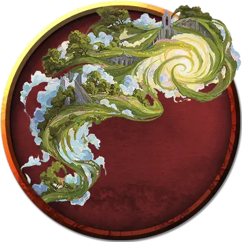

Планарное воплощение
Planar Incarnate
Громадное Исчадие (Или Небожитель), любое мировоззрение

Класс Доспеха 20 (природный доспех)
Хиты 333 (18к20 + 144)
Скорость 40 футов, летая 40 футов
| мод | спас | ||
|---|---|---|---|
| СИЛ | 27 | +8 | +8 |
| ЛОВ | 10 | +0 | +0 |
| ТЕЛ | 26 | +8 | +8 |
| мод | спас | ||
|---|---|---|---|
| ИНТ | 15 | +2 | +2 |
| МДР | 20 | +5 | +5 |
| ХАР | 20 | +5 | +5 |
Навыки Восприятие +12
Иммунитет к урону излучение, некротическая энергия, яд; немагический дробящий, колющий, рубящий
Иммунитет к состояниям бессознательность, захват, испуг, истощение, окаменение, опутанность, отравление, очарование, ошеломление, паралич
Чувства истинное зрение 120 футов, пассивное Восприятие 22
Языки Все
Опасность 22 (41000 опыта)
Бонус мастерства +7
Особенности
Легендарное сопротивление (3/день). Если воплощение проваливает спасбросок, он может вместо этого сделать спасбросок успешным.
Сопротивление магии. Воплощение совершает с преимуществом спасброски от заклинаний и прочих магических эффектов.
Осадный монстр. Воплощение наносит двойной урон объектам и сооружениям.
Планарная форма. Воплощение на Верхних Планах - Небожитель. Воплощение на Нижних планах - Исчадие.
Действия
Мультиатака. Воплощение совершает две атаки Размашистым ударом или Энергетическим снарядом.
Размашистый удар. . Рукопашная атака оружием: +15 к попаданию, досягаемость 15 футов, одна цель. Попадание: 27 (3к12 + 8) урона силовым полем.
Энергетический снаряд. . Дальнобойная атака заклинанием: + 12 к попаданию, дистанция 120 футов, одна цель. Попадание: 32 (5к12) урона некротической энергией если воплощение - Исчадие, или излучением, если воплощение - Небожитель.
Планарный выдох (перезарядка 5-6). Воплощенный выдыхает концентрированную энергию, присущую его плану, в виде 60-футового конуса. Каждое существо в этой области должно совершить спасбросок Телосложения Сл 23. При провале существо получает 52 (8к12) урона некротической энергией если воплощение - Исчадие, или излучением, если воплощение - Небожитель, и существо становится ослеплённым до конца следующего хода воплощения. При успехе существо получает только половину этого урона.
Реакции
Воплощение может совершать до трёх реакций за раунд, но только одну за ход.
Опаляющий взгляд. В ответ на попадание броском атаки воплощение обращает свой магический взор на одно существо, которое оно может видеть в пределах 120 футов, и приказывает ему сгореть. Цель должна преуспеть в спасброске Мудрости Сл 20, иначе получит 16 (3к10) урона огнём.
Телепортация. Сразу после того, как существо, которое воплощение может видеть, заканчивает свой ход, воплощенние телепортируется на расстояние до 60 футов в незанятое пространство, которое оно может видеть.
Описание
Верхний и Нижний планы - это фундаментальные проявления добра и зла, закона и хаоса. В самых ужасных и судьбоносных обстоятельствах эти планы могут проявить первобытные воплощения своей мощи. Эти выражения силы плана называются планарными воплощениями, и они проявляются как бурлящие потоки энергии с особенностями того плана что их создал. Они защищают свой дом от разрушительных или иных противоположных сил, а затем возвращаются на свой изначальный план.
Планарные воплощения сродни стихийным бедствиям, которые направлены на защиту и развитие добродетелей и пороков тех планов, на которых они происходят. Те, что с Нижних планов, могут появляться в виде бурлящих волн дьявольского пламени или других зловещих форм, в то время как те, что с Верхних планов, часто появляются в виде разноцветного света и буйной растительности или подобных величественных форм. В тех редких случаях, когда планарные воплощения появляются на другом плане, они могут принимать любую форму или проявляться как уникальные проявления философий, которые они воплощают.